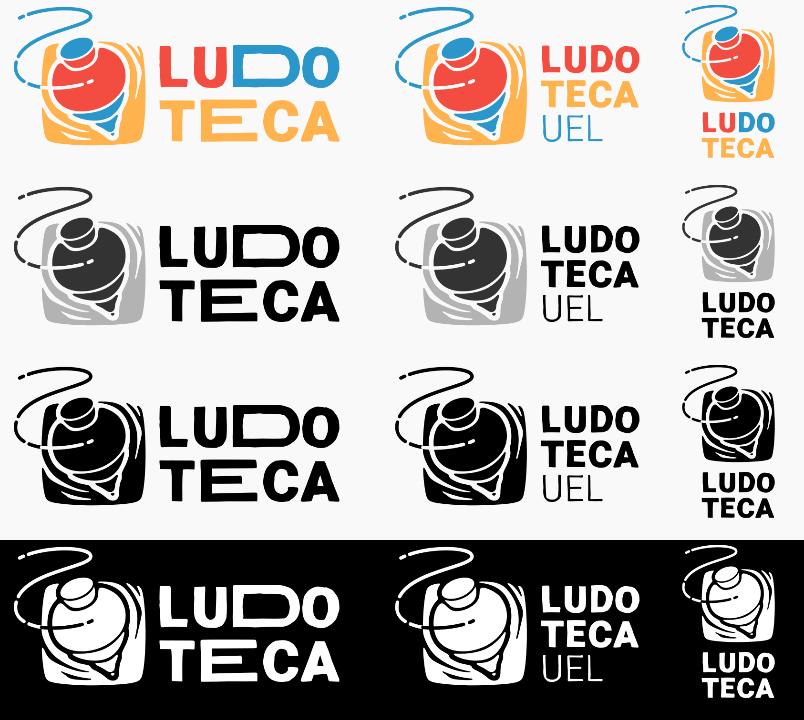

Ludoteca UEL
Identidade visual desenvolvida para materiais de comunicação da Ludoteca da Universidade Estadual de Londrina.
Detalhes do Projeto
Projeto de identidade visual desenvolvido para a Ludoteca da Universidade Estadual de Londrina.
Durante o desenvolvimento da logo, foi colocada grande ênfase na necessidade de dialogar não só com as crianças, mas também com adolescentes e adultos — que também possuem envolvimento interno nos projetos desenvolvidos na Ludoteca. Por conta disso, o símbolo selecionado para a logo final foi o peão, por sua caracterização lúdica, mas também por ser um brinquedo tradicional que ainda provoca nostalgia em muitos adultos.
Galeria do Projeto
